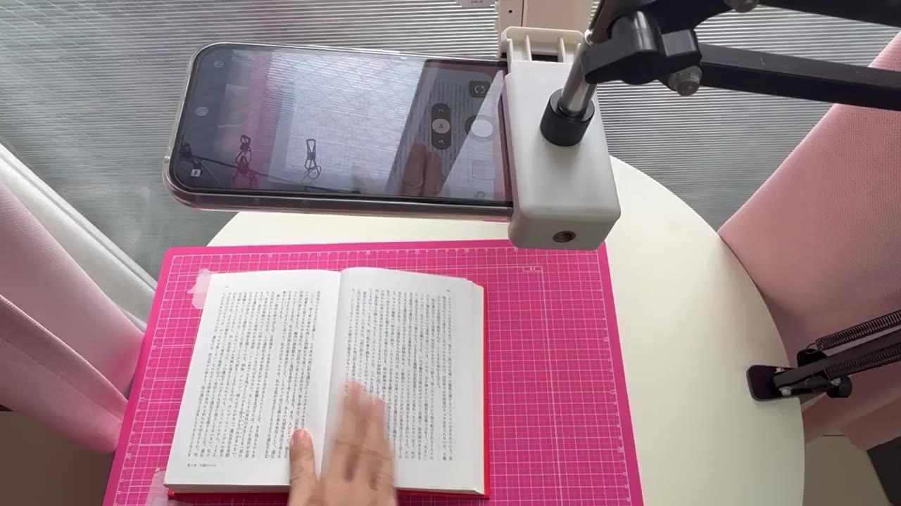
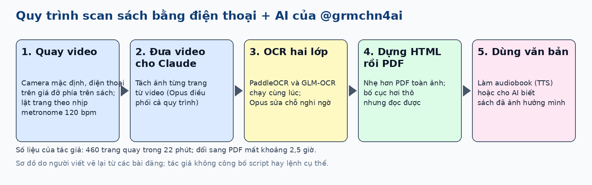
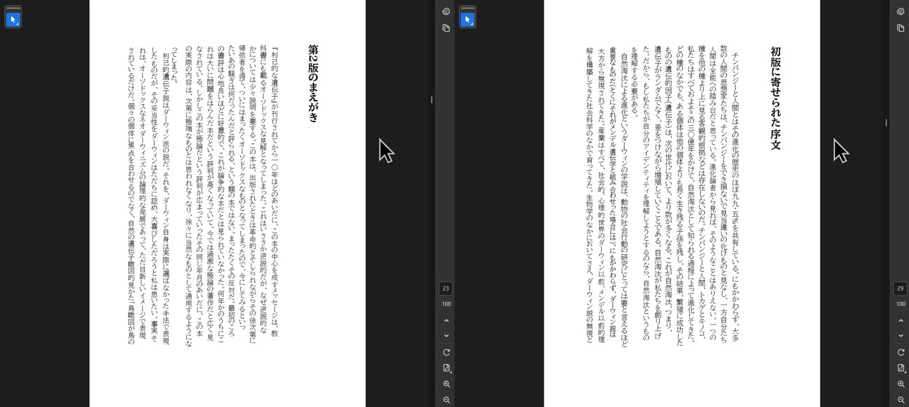
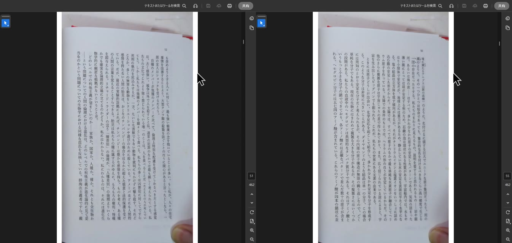
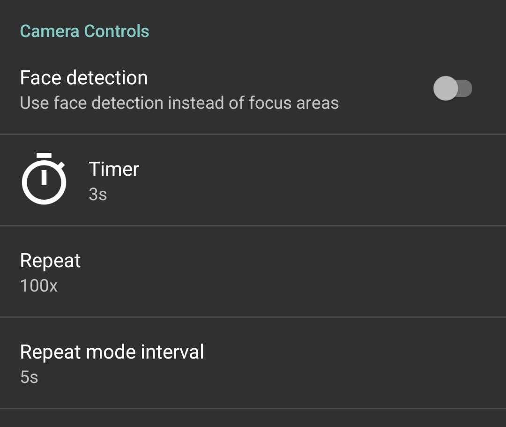
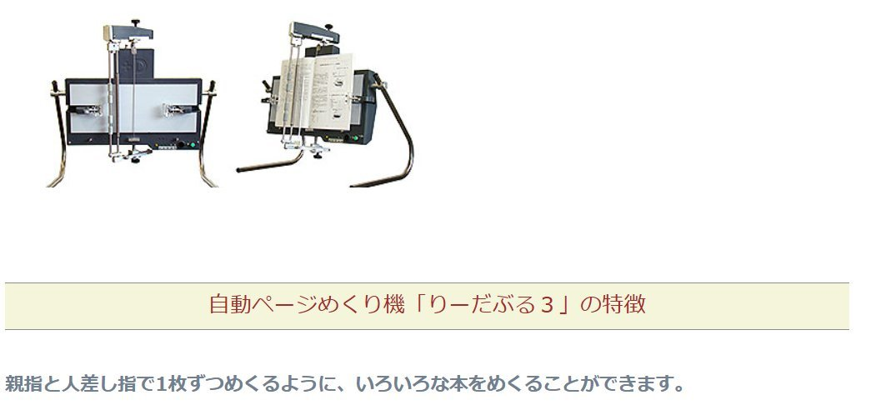
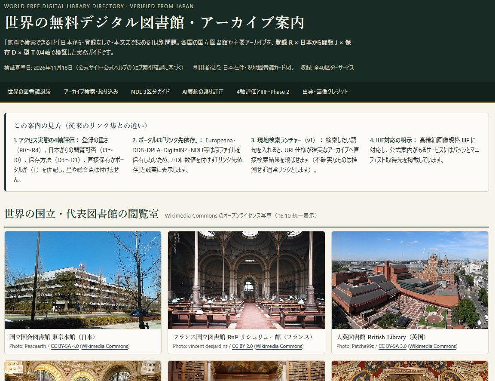

Tự scan sách bằng điện thoại và AI: quay video, OCR hai lớp và cuộc tranh luận “nó đã đọc rồi mà”
Đây là bài tổng hợp có dịch, không phải bản dịch nguyên văn: gom bài gốc, chuỗi tự trả lời của tác giả và các trả lời đáng chú ý. Phần tiếng Anh do người viết soạn lại từ tiếng Nhật. Hình ảnh trích từ video và bài đăng của các tác giả, thuộc về họ, đăng ở đây vì mục đích học tập phi thương mại và có ghi công; sơ đồ quy trình do người viết vẽ. Bài không đưa lệnh hay script vì tác giả không công bố.

TL;DR
- @grmchn4ai tìm cách số hóa sách giấy trong thời đại AI agent: quay video bằng camera mặc định, rồi nhờ Claude làm thành PDF. Opus từ chối vì bản quyền (nhận ra Gen vị kỷ chỉ từ một trang).
- Cách lách: chèn OCR giữa chừng, chạy PaddleOCR và GLM-OCR, để Opus sửa chỗ đáng ngờ, dựng HTML rồi PDF. 460 trang: quay 22 phút, đổi PDF 2,5 giờ. Lật trang theo metronome 120 bpm.
- Giới hạn: ảnh trang bị méo, còn ngón tay, chữ Nhật dọc và ruby khó OCR, nên với sách nhiều hình hay truyện tranh nên dùng ứng dụng scan sẵn có.
- Phần trả lời thêm: quay hẹn giờ bằng OpenCamera, Google Drive scan, máy scan và công cụ tất định, máy lật trang tự động, cảnh báo điều khoản Kindle, tranh luận “nó đã ăn rồi” và thư viện số hợp pháp (NDL). Nhiều ý chưa kiểm chứng và được ghi rõ.
Cách đọc: Ở chế độ Song ngữ, rê chuột lên từng đoạn để xem tiếng Việt bên dưới. Trên điện thoại, chạm đoạn để mở/đóng bản dịch; chạm liên kết vẫn mở liên kết. Dùng phím Tab để xem bản dịch, Esc để đóng. Nút nổi góc dưới bên trái chuyển sang Toàn bộ tiếng Việt và ghi nhớ lựa chọn. Khi tắt JavaScript, cả hai ngôn ngữ được hiển thị.
Bài viết song ngữ
What the post is about
Bài đăng nói về điều gì
On 17 Nov 2026 the Japanese AI-tools account “gear machine@AI” (@grmchn4ai) posted a 13-second video and a complaint. He is looking for a way to “jisui” (自炊, scan your own paper books into digital files) in the age of AI agents: film the pages as a video with the phone’s default camera app, then let the AI turn it into a PDF. When he tried, the AI balked: roughly, “this is The Selfish Gene, and OCR-ing a page raises copyright issues…”. His reaction: how can it know the book’s title from an image of plain text? “It has already eaten it.”
Ngày 17/11/2026, tài khoản công cụ AI Nhật “gear machine@AI” (@grmchn4ai) đăng một video dài 13 giây kèm lời than phiền. Anh đang tìm cách “jisui” (自炊, tự scan sách giấy của mình thành file số) trong thời đại AI agent: quay các trang sách thành video bằng ứng dụng camera mặc định của điện thoại, rồi để AI làm ra file PDF. Khi thử, AI chùn lại, đại ý: “Đây là Gen vị kỷ (The Selfish Gene), OCR một trang thì vướng bản quyền…”. Phản ứng của anh: chỉ từ ảnh chụp một trang chữ mà đoán ra tên sách, thì “nó ăn (học) cuốn này rồi còn gì”.
The author then posted the fix in a self-thread: put OCR in the middle. This post follows that thread, and adds what the replies contributed: capture tricks, alternatives, doubts about the whole idea, and a debate about what AI models have already “read”.
Sau đó tác giả đăng cách xử lý trong chuỗi tự trả lời: chèn bước OCR vào giữa. Bài này đi theo chuỗi đó, và bổ sung những gì phần trả lời đóng góp: mẹo quay, phương án thay thế, những nghi ngại về cả ý tưởng, và cuộc tranh luận về việc các mô hình AI “đã đọc” những gì.

The refusal and the workaround
Lời từ chối và cách lách
In a reply, the author says the refusal came from Opus (Anthropic’s Claude model), and that a Gemini model he used a while ago had read the pages without complaint, so the refusal surprised him.
Trong một trả lời, tác giả cho biết người từ chối là Opus (mô hình Claude của Anthropic), còn một mô hình Gemini anh dùng trước đó đã đọc trang sách bình thường nên lần này anh bất ngờ. (xem trả lời)
His workaround, in the first reply of his own thread (post): “It seems that putting OCR in the middle makes it acceptable to pass a book through an AI agent.” The setup is two open-source OCR engines, PaddleOCR and GLM-OCR, run together, with Opus correcting the doubtful spots. A PDF made of page images is heavy, so the pipeline builds HTML first and converts that to PDF. The layout is a bit rough, but it reads fine. Filming 460 pages took 22 minutes and the PDF conversion took 2.5 hours.
Cách lách của anh, trong trả lời đầu tiên của chuỗi tự đăng (bài đăng): “Có vẻ chèn OCR vào giữa thì việc cho AI agent xử lý cả cuốn sách được chấp nhận.” Cấu hình gồm hai bộ OCR mã nguồn mở là PaddleOCR và GLM-OCR chạy cùng lúc, còn Opus sửa những chỗ đáng ngờ. PDF làm từ ảnh từng trang thì nặng, nên quy trình dựng HTML trước rồi chuyển HTML sang PDF. Bố cục hơi thô nhưng đọc được. Quay 460 trang mất 22 phút, đổi sang PDF mất 2,5 giờ.

He is candid about the limit (post): he could not correct the page distortion from filming, so anyone who wants to digitise image-heavy books should use an off-the-shelf dewarping app. His own goal was audiobooks, which need only the text, so he did not bother.
Anh nói thẳng về giới hạn (bài đăng): anh không sửa được độ méo của trang khi quay, nên ai muốn số hóa sách nhiều hình thì nên dùng ứng dụng chỉnh méo có sẵn. Mục tiêu của anh là làm audiobook, chỉ cần văn bản, nên anh không xử lý phần đó.

The method step by step
Phương pháp từng bước
Here is the method as far as the author describes it. He did not publish scripts or commands, so none are shown here.
Đây là phương pháp theo đúng những gì tác giả mô tả. Anh không công bố script hay lệnh nào, nên bài này không đưa lệnh.
- Mount the phone and film. Use the default camera app on a stand above the book (the video shows a phone on an arm over a book on a cutting mat). He flipped pages to a metronome app at 120 bpm: “fixing it at 2 counts = 1 second” lets him get back into rhythm quickly after a failed flip. He says 100 pages take about 6 minutes.
- Give the video to Claude. It can produce a PDF from the video, but it cannot be left alone: expect several rounds of back-and-forth.
- OCR twice. Run PaddleOCR and GLM-OCR on the pages, then ask Opus to fix the places where the two disagree or look wrong. (“Disagree” is our reading of “怪しい箇所”, suspicious spots; he does not spell out the rule.)
- Build HTML, then PDF. A PDF of page images is heavy; the HTML route gives a lighter PDF with rougher layout.
- Use the text. His uses: text-to-speech audiobooks, and telling an AI which books shaped him.
- Gắn điện thoại và quay. Dùng ứng dụng camera mặc định, điện thoại đặt trên giá phía trên cuốn sách (video cho thấy điện thoại trên một cánh tay đỡ, sách đặt trên tấm lót cắt). Anh lật trang theo ứng dụng metronome ở 120 bpm: “cố định 2 nhịp = 1 giây” giúp anh lấy lại nhịp nhanh khi lật hỏng một trang. Anh nói 100 trang mất khoảng 6 phút.
- Đưa video cho Claude. Claude làm được PDF từ video, nhưng không thể phó mặc: phải trao đổi qua lại vài lượt.
- OCR hai lần. Chạy PaddleOCR và GLM-OCR trên các trang, rồi nhờ Opus sửa những chỗ hai bên lệch nhau hoặc trông sai. (“Lệch nhau” là cách người viết hiểu cụm “怪しい箇所” — các chỗ đáng ngờ; anh không nêu quy tắc cụ thể.)
- Dựng HTML rồi PDF. PDF toàn ảnh thì nặng; đi đường HTML cho PDF nhẹ hơn nhưng bố cục thô hơn.
- Dùng văn bản. Mục đích của anh: đọc thành tiếng (TTS) làm audiobook, và cho AI biết những cuốn sách đã ảnh hưởng đến mình.
Tools named in the thread: PaddleOCR and GLM-OCR (a 0.9B-parameter open OCR model from Z.ai, per its repository). For how a fast OCR engine and a vision-language model complement each other, see our earlier post “Two kinds of document OCR”.
Các công cụ được nêu trong chuỗi: PaddleOCR và GLM-OCR (mô hình OCR mở 0,9 tỷ tham số của Z.ai, theo kho mã của nó). Về cách một bộ OCR nhanh và một mô hình thị giác–ngôn ngữ bổ trợ nhau, xem bài trước trên blog “Hai loại OCR tài liệu”.
He also tried a local model. Qwen3.8 Flash Next, run locally, could not OCR a two-page spread well, and on single-page images its Japanese OCR was mediocre; the open-source OCR engines did better. He suspects the Japanese text is partly to blame.
Anh cũng thử một mô hình chạy cục bộ. Qwen3.8 Flash Next chạy trên máy không OCR tốt ảnh cả trang đôi, còn với ảnh từng trang thì OCR tiếng Nhật chỉ ở mức tầm tầm; các bộ OCR mã nguồn mở làm tốt hơn. Anh ngờ rằng tiếng Nhật là một phần nguyên nhân. (trả lời cho @hi87des, trả lời cho @debuggingnation)
What the replies add
Phần trả lời bổ sung những gì
The post drew about 70 posts in its conversation. Below are the substantive ones, grouped by theme; spam and joke replies are left out except where noted. The author answered many of them, and those answers are credited to him.
Bài đăng kéo theo khoảng 70 bài trong cuộc hội thoại (gồm cả trả lời lồng nhau). Dưới đây là những bài có nội dung, gom theo chủ đề; trả lời spam hoặc đùa được bỏ qua trừ khi có ghi chú. Tác giả đã đáp lại nhiều bài, và các câu đáp đó được ghi công cho anh.
Capturing the pages
Chụp các trang
- Timer instead of video. @someheher prefers the OpenCamera app with a timer. The screenshot shows Timer 3 s, Repeat 100×, and a repeat interval of 5 s. The author called it clever and said he stuck to video this time.
- Phone only, low cost. To @walpsbh’s advice to cut the binding and use a cheap scanner, the author replied that his phone-only method suits people with no money, lots of spare time and little patience, and that you can still sell the book afterwards (reply).
- Use a scanning app. @frankie2579 (Spanish) suggests Google Drive’s scan, then opening the PDF in Chrome so it runs OCR, and printing to PDF to embed the text. The author had tried Drive first, but the standard camera route only took one page at a time. frankie2579 answered that recent versions let you scan several pages continuously into one PDF, “flipping pages like in the video”. We did not test this. @GalbladderKing just says “vflat”, which we read as the vFlat scanning app (not verified).
- Auto page-turner. @maruya328 shows an automatic page-turning machine (a product page for “りーだぶる3”, which turns pages one at a time with a thumb-and-finger mechanism). The author joked that his next request to Claude will be an auto page-turner. @kuni012 found the idea good but page-flipping tedious; the author said it is 100 pages in 6 minutes, doubling as review and speed-reading practice.
- Or just keep the video. @runshiwa asks why not read the video as-is. @teat9001 agrees that watching the video directly is easier: he flips through lots of manga at manga cafés and only reads closely now and then, since he mostly reads for reference. The author: smart — video even comes with a kind of auto-flip.
- Hẹn giờ thay vì quay video. @someheher thích dùng ứng dụng OpenCamera với bộ hẹn giờ. Ảnh chụp màn hình cho thấy Timer 3 giây, Repeat 100×, và khoảng cách lặp 5 giây. Tác giả khen là khôn và nói lần này anh muốn giữ cách quay video.
- Chỉ cần điện thoại, ít tốn kém. Trước lời khuyên cắt gáy sách rồi dùng máy scan rẻ của @walpsbh, tác giả đáp rằng cách chỉ-dùng-điện-thoại hợp với người không có tiền, nhiều thời gian và lười, và vẫn bán được cuốn sách sau khi scan (trả lời).
- Dùng ứng dụng scan. @frankie2579 (tiếng Tây Ban Nha) gợi ý dùng tính năng scan của Google Drive, rồi mở PDF bằng Chrome để nó chạy OCR, và in ra PDF để nhúng chữ vào. Tác giả đã thử Drive đầu tiên, nhưng đường camera mặc định chỉ nhập được từng trang một. frankie2579 đáp rằng các bản gần đây cho scan liên tục nhiều trang thành một PDF, “lật trang như trong video”. Người viết chưa kiểm thử điều này. @GalbladderKing chỉ viết “vflat”, mà người viết hiểu là ứng dụng scan vFlat (chưa kiểm chứng).
- Máy lật trang tự động. @maruya328 đưa ảnh một máy lật trang tự động (trang sản phẩm “りーだぶる3”, lật từng trang bằng cơ cấu như ngón cái và ngón trỏ). Tác giả đùa rằng yêu cầu tiếp theo anh gửi Claude sẽ là máy lật trang. @kuni012 thấy ý tưởng hay nhưng lật trang thì phiền; tác giả đáp rằng 100 trang mất 6 phút, còn tiện ôn bài và luyện đọc nhanh.
- Hoặc cứ giữ video. @runshiwa hỏi sao không đọc thẳng video. @teat9001 đồng tình rằng xem thẳng video tiện hơn: anh hay lật hàng loạt truyện tranh ở tiệm manga và chỉ thỉnh thoảng đọc kỹ, vì chủ yếu đọc để tham khảo. Tác giả: khôn đấy — video cũng đã có sẵn kiểu “tự lật”.


Do you even need AI for this?
Có thật sự cần AI cho việc này không?
- @baianoise: “You absolutely do not need AI agents for that, there are deterministic tools that do that very well.” The author agreed: this was an experiment driven by curiosity and a stingy reluctance to pay an existing app, and he recommends the existing apps (reply).
- @JustDingIt: “you do what Anthropic does”: cut the spine and feed the sheets through a scanner. @shirotapandasan says Anthropic is said to have cut books and scanned them to build models. This is hearsay in the thread; we did not verify it.
- Image-heavy books and manga: the author says the finger and distortion stay in the page-by-page image PDF, so for manga an off-the-shelf OCR/dewarp app is better (post).
- @AIHobbyist65536 suggests trying open-weight models, which are looser; @debuggingnation says “try a different AI”, and maybe uncensored ones. These two are suggestions, not tested results.
- @baianoise: “Hoàn toàn không cần AI agent cho việc này, có những công cụ tất định làm rất tốt.” Tác giả đồng ý: đây là thí nghiệm vì tò mò và vì tính hà tiện không muốn trả tiền cho ứng dụng có sẵn, và anh khuyên dùng các ứng dụng có sẵn (trả lời).
- @JustDingIt: “bạn làm như Anthropic”: cắt gáy sách rồi cho từng tờ qua máy scan. @shirotapandasan nói người ta đồn Anthropic từng cắt sách và scan để làm mô hình. Đây là lời đồn trong chuỗi; người viết không kiểm chứng.
- Sách nhiều hình và truyện tranh: tác giả nói ngón tay và độ méo vẫn còn trong PDF ảnh từng trang, nên với truyện tranh thì dùng ứng dụng OCR/chỉnh méo có sẵn tốt hơn (bài đăng).
- @AIHobbyist65536 gợi ý thử các mô hình trọng số mở vì chúng dễ tính hơn; @debuggingnation bảo “thử AI khác”, có thể là loại không kiểm duyệt. Hai ý này là gợi ý, chưa phải kết quả đã thử.
Making the model cooperate
Cách làm cho mô hình chịu hợp tác
- @ProductMorty: ask the model to act as a translator for you and use that to get past the copyright objection; also, a photo or a video frame is better than the MP4 itself. (A suggestion; we did not test it, and we do not recommend phrasing a request to evade a safeguard.)
- @RaideningBird: better to import the English original and have it translated. The author added that Japanese vertical writing is really not OCR-friendly, and ruby (furigana) text causes trouble too (reply).
- @imadoki_ai: famous books have been seen so often in quotes and reviews that a few lines are enough to name them. He suggests leaving the text recognition to the phone’s built-in OCR and asking the AI only to reorder and summarise.
- @aiW8eng: put the result into Gemini’s notebook feature so you can carry the book on your phone (we read “Gemini notebook” as NotebookLM-style notebooks; not verified).
- @ohpancakes asks whether you could do the same with a DRM-free audiobook. The author says that if the audio can be saved as a WAV file on a PC, it should work with no problem (his reasoning, not a tested result).
- @ProductMorty: nhờ mô hình đóng vai người dịch cho bạn, và dùng đó để vượt qua phản đối về bản quyền; ngoài ra ảnh chụp hoặc khung hình tách từ video tốt hơn chính file MP4. (Đây là gợi ý, người viết chưa thử, và người viết không khuyến khích cách diễn đạt nhằm né một cơ chế bảo vệ.)
- @RaideningBird: nên nhập bản tiếng Anh gốc rồi cho dịch. Tác giả bổ sung rằng chữ Nhật viết dọc thật sự không hợp với OCR, và phần ruby (furigana) cũng hay gây lỗi (trả lời).
- @imadoki_ai: sách nổi tiếng đã xuất hiện quá nhiều lần trong các đoạn trích và bài điểm sách, nên chỉ vài dòng là đoán ra tên. Anh gợi ý để phần nhận dạng chữ cho chức năng OCR có sẵn của điện thoại, và chỉ nhờ AI sắp xếp lại và tóm tắt.
- @aiW8eng: đưa kết quả vào tính năng sổ tay của Gemini để mang cuốn sách theo trên điện thoại (người viết hiểu “Gemini notebook” là kiểu sổ tay như NotebookLM; chưa kiểm chứng).
- @ohpancakes hỏi liệu có thể làm tương tự với audiobook không bị DRM. Tác giả đáp rằng nếu lưu được âm thanh thành file WAV trên PC thì làm được, không vấn đề (suy luận của anh, chưa phải kết quả đã thử).
Kindle and other e-book routes
Sách Kindle và các đường khác
- @rukiseno_rio (Android): a MacroDroid macro takes screenshots of the whole Kindle book, and Codex turns them into a text file. The author: for Kindle titles, Codex alone can do the text conversion, for example by driving a PC browser or Android directly, but doing it in bulk may risk a ban under the terms of service (reply). @Agimov3 was surprised at that warning. We did not check Amazon’s terms; read them yourself before trying.
- @rukiseno_rio (Android): một macro MacroDroid chụp màn hình toàn bộ cuốn Kindle, rồi Codex chuyển thành file văn bản. Tác giả: với sách Kindle thì chỉ riêng Codex cũng làm được việc chuyển thành văn bản, ví dụ điều khiển trình duyệt trên PC hoặc điều khiển trực tiếp Android, nhưng làm hàng loạt có thể bị khóa tài khoản theo điều khoản dịch vụ (trả lời). @Agimov3 ngạc nhiên trước cảnh báo này. Người viết chưa kiểm tra điều khoản của Amazon; hãy tự đọc trước khi thử.
“It already ate it”: the copyright argument
“Nó đã ăn rồi”: tranh luận bản quyền
- @toshix001 says yes, it has: when he asked what a book actually said about something, the AI gave it, even the source text of the translation, and later the chapter. He did not check whether it was word-for-word, and hallucination is possible; some of the material is disputed and some permitted. The author called the source-text lookup very handy as a user, but felt uneasy about the model apparently having both the Japanese and the original editions (reply). toshix001 added that it is scary to wonder how far this goes, but that quoting out-of-print or public-domain books could be revolutionary.
- @toshix001 also notes a hot topic: used books are being bought up and shipped by the container, and the same is reportedly happening in South Korea, so many old books are probably collected in the United States. His screenshot of a Google AI summary says the specifics of what companies trained on are undisclosed and that lawsuits and settlements over books are ongoing in the US. We did not verify the summary’s claims and do not use them as facts.
- On the law, the author says that in Japan, learning from books you bought and quoting within a reasonable range is fine, but how much output is acceptable is still being debated (reply). That is his summary, not legal advice. @lterlemez and a follow-up argue the companies took data that was not theirs. @gpt_jack (Chinese) has hit the same refusal even as a paying member. @HeyShobhan calls it proof of pretraining memorisation colliding with safety guardrails.
- The author’s test idea: to check which books Anthropic read, you could ask the model “what is the title of the book that contains this page image?” (post). shirotapandasan found that funny if it answered. It is a joke-style idea, not a rigorous test.
- Jokes worth knowing: @Ustio1995 compared it to a scene in the series “Isekai Izakaya Nobu”, where a noble in a country that bans lager shouts “This is illegal lager!” after one sip and is told that knowing means he has drunk it; the author replied “Officer! That reggae record shop smells of cannabis” (reply). @Streeeam078 pretended to wonder how it knew the title. @Krxara wrote that after eating everything, they now switch to regulating and monopolising the profit.
- @toshix001 nói là có: khi anh hỏi một cuốn sách thực sự viết gì về một chuyện, AI đưa ra được, kể cả nguyên văn bản gốc của bản dịch, và sau đó cả chương nào. Anh không kiểm tra có đúng từng chữ không, và vẫn có khả năng ảo giác; một số tư liệu đang bị tranh cãi, một số được phép. Tác giả nói việc tra nguyên văn rất tiện cho người dùng, nhưng thấy áy náy khi hiểu rằng mô hình dường như có cả bản tiếng Nhật lẫn bản gốc (trả lời). toshix001 thêm rằng nghĩ đến chuyện nó đi xa đến đâu thì đáng sợ, nhưng nếu trích dẫn được sách đã tuyệt bản hoặc hết hạn bản quyền thì sẽ là một cuộc cách mạng.
- @toshix001 cũng nhắc một chủ đề nóng: người ta mua gom sách cũ rồi chở bằng container, và nghe nói Hàn Quốc cũng vậy, nên nhiều khả năng một lượng lớn sách cũ đang được gom về Mỹ. Ảnh chụp phần tóm tắt AI của Google mà anh đăng nói rằng quy mô và nội dung dữ liệu huấn luyện không được công bố, và các vụ kiện, thỏa thuận về sách vẫn đang diễn ra ở Mỹ. Người viết không kiểm chứng các khẳng định đó và không dùng chúng làm dữ kiện.
- Về luật, tác giả nói ở Nhật việc học từ sách đã mua và trích dẫn trong phạm vi hợp lý thì không sao, nhưng xuất ra bao nhiêu thì còn đang tranh luận (trả lời). Đó là cách tóm tắt của anh, không phải tư vấn pháp lý. @lterlemez và câu tiếp theo cho rằng các công ty đã lấy dữ liệu không thuộc về họ. @gpt_jack (tiếng Trung) cũng bị từ chối y như vậy dù là thành viên trả phí. @HeyShobhan gọi đây là bằng chứng sống động cho việc ký ức tiền huấn luyện va vào hàng rào an toàn.
- Ý tưởng kiểm tra của tác giả: để biết Anthropic đã đọc những cuốn nào, có thể hỏi mô hình “cuốn sách chứa trang trong ảnh này tên gì?” (bài đăng). shirotapandasan thấy sẽ rất buồn cười nếu nó trả lời. Đó là ý tưởng kiểu đùa, không phải phép thử nghiêm túc.
- Vài câu đùa đáng biết: @Ustio1995 so với một cảnh trong loạt truyện “Isekai Izakaya Nobu”, nơi một quý tộc ở nước cấm bia lager nhấp một ngụm rồi la “Đây là bia lager phạm pháp!”, và bị bắt bẻ rằng biết được nghĩa là đã từng uống; tác giả đáp “Cảnh sát ơi! Cửa hàng đĩa nhạc reggae đó có mùi cần sa!” (trả lời). @Streeeam078 giả vờ thắc mắc sao nó biết tên sách. @Krxara viết rằng ăn hết rồi thì giờ chuyển sang làm bên kiểm soát và độc chiếm lợi nhuận.
Legal ways to read: libraries
Cách đọc hợp pháp: thư viện
@toshix001 pointed the author to the National Diet Library Digital Collections (dl.ndl.go.jp), an official service where many books can be read free. Out-of-print material is available through the “personal transmission” service, but it needs a full registration with identity documents and a review that takes days to weeks. The author’s own reply, a joke, warns against sneaking cameras such as Meta Ray-Bans into the library (reply). toshix001 then built a guide to free digital libraries accessible from Japan: World free digital library directory, which says it checked 40 services on 18 Nov 2026 on four axes (registration, access from Japan, saving, type).
@toshix001 chỉ cho tác giả Thư viện số của Thư viện Quốc hội Nhật (NDL, dl.ndl.go.jp), một dịch vụ chính thức cho đọc miễn phí nhiều sách. Tài liệu đã tuyệt bản đọc được qua dịch vụ “truyền cá nhân”, nhưng phải đăng ký đầy đủ bằng giấy tờ tùy thân và chờ duyệt từ vài ngày đến vài tuần. Câu đáp của tác giả, mang tính đùa, cảnh báo đừng lén mang camera như kính Meta Ray-Ban vào thư viện (trả lời). Sau đó toshix001 làm một trang hướng dẫn các thư viện số miễn phí truy cập được từ Nhật: Thư mục thư viện số miễn phí thế giới; trang này nói đã kiểm tra 40 dịch vụ ngày 18/11/2026 theo bốn trục (đăng ký, truy cập từ Nhật, lưu trữ, loại hình).

What to take from it
Rút ra điều gì
- A “two-layer OCR plus an LLM proofreader” pipeline is the author’s concrete, working answer; the refusal was avoided by changing the pipeline, not by arguing with the model.
- The cheap-and-lazy route (phone, metronome, video) gives readable text but distorted images; if you need clean page images or manga, use a dewarping scan app.
- The thread’s most useful contributions are practical: timer-based capture, Google Drive or other scanner apps, and a good reminder that deterministic tools may be all you need.
- The argument over “it already ate it” stays unresolved in the thread; treat the legal remarks as personal views.
- Quy trình “OCR hai lớp rồi để LLM soát lỗi” là câu trả lời cụ thể, chạy được của tác giả; lời từ chối được tránh bằng cách đổi quy trình, không phải bằng cách cãi với mô hình.
- Đường rẻ và lười (điện thoại, metronome, video) cho văn bản đọc được nhưng ảnh bị méo; nếu cần ảnh trang sạch hoặc truyện tranh thì dùng ứng dụng scan có chỉnh méo.
- Đóng góp hữu ích nhất của chuỗi là các mẹo thực tế: quay bằng hẹn giờ, Google Drive hoặc các ứng dụng scan khác, và lời nhắc rằng có thể chỉ cần công cụ tất định.
- Cuộc tranh luận “nó đã ăn rồi” vẫn chưa ngã ngũ trong chuỗi; hãy xem các nhận định pháp lý là quan điểm cá nhân.
Know-how & Insight
Ghi chú và lưu ý của người dịch
- Nguồn gốc nội dung. Bài gốc là bài đăng ngày 17/11/2026 (12:24 giờ Việt Nam) của @grmchn4ai, tiếng Nhật, kèm video 13 giây. Người viết đọc toàn bộ chuỗi hội thoại (khoảng 70 bài, đọc ngày 26/11/2026), gồm các bài tự trả lời của tác giả và các bài đáng chú ý của người khác. Tại thời điểm đọc, bài gốc có khoảng 2.470 lượt thích, 278 lượt đăng lại, 966 lượt lưu và hơn 193.000 lượt hiển thị. Các đoạn tiếng Nhật, Tây Ban Nha và Trung Quốc do người viết tự dịch (phần tiếng Anh cũng là bản người viết soạn lại từ tiếng Nhật). Bài cố ý không dịch từng chữ mà gom theo chủ đề.
- “自炊” (jisui). Nghĩa đen là “tự nấu ăn”; trong tiếng Nhật chỉ việc tự scan sách giấy mình mua để có bản số cho dùng cá nhân. “食うとる” trong câu của tác giả là cách nói đùa: “ăn” = đã được dùng để huấn luyện.
- Những gì tác giả không công bố. Script, lệnh, tên chính xác của sách và cấu hình của PaddleOCR/GLM-OCR, ngưỡng để Opus “sửa chỗ đáng ngờ”, và nội dung câu nhắc đã dùng. Vì vậy bài không đưa lệnh nào; sơ đồ năm bước chỉ phản ánh những gì anh đã viết.
- Số liệu chưa khớp hoàn toàn. 460 trang trong 22 phút là khoảng 2,9 giây mỗi trang, còn “100 trang trong 6 phút” là 3,6 giây mỗi trang; điều này không mâu thuẫn với nhịp 2 nhịp = 1 giây cho mỗi lần lật, vì tổng thời gian còn gồm việc lật hỏng và chỉnh lại. Đó là phỏng đoán của người viết; tác giả không giải thích.
- Điều chỉ thử trên tiếng Nhật. Các nhận xét về OCR (chữ dọc, ruby, mô hình cục bộ yếu) đều là chữ Nhật. Người viết không có dữ liệu cho tiếng Việt; chữ ngang có dấu có thể cho kết quả khác.
- Tên mô hình. “Qwen3.8 Flash Next” và “Opus” được ghi đúng như tác giả viết. Người viết không kiểm chứng phiên bản cụ thể.
- Bản quyền. Người viết không đưa ra tư vấn pháp lý. Tác giả nói ý kiến về luật Nhật Bản; luật mỗi nước khác nhau, và việc scan sách để dùng riêng khác với việc phát tán file. Hãy kiểm tra luật và điều khoản dịch vụ (kể cả Kindle) tại nơi bạn ở trước khi làm. Mọi nhận định về vụ kiện hay cách các công ty huấn luyện mô hình trong chuỗi đều là ý kiến của người bình luận hoặc từ một ảnh chụp tóm tắt AI, người viết không kiểm chứng.
- Phần trả lời đã bị lọc. Bài bỏ qua bot tải video tự động (@rattibha) và các trả lời chỉ đùa hoặc lặp lại; một meme về Claude/DeepSeek (@hi87des) không được dùng vì không liên quan đến phương pháp.
- Liên hệ các bài cùng mạch trên blog. Về OCR nhanh–rẻ so với VLM chính xác, xem “Hai loại OCR tài liệu”; về việc tách trích xuất có kiểu từ văn bản, ảnh và PDF, xem “OpenRouter ra mắt Extractions API”; về việc dựng quy trình tự động hóa với agent, xem “Tự động hóa mọi thứ với Grok Bot”.
Đây là phân tích bổ sung của người dịch, không phải phần nguyên văn hay khuyến nghị đã được tác giả xác nhận.
Mindmap — Scan sách bằng điện thoại và AI
mindmap
root((Scan sách bằng điện thoại + AI))
Vấn đề
Opus từ chối OCR vì bản quyền
Đoán ra tên sách từ một trang
Cách làm của tác giả
Quay video camera mặc định
Metronome 120 bpm để lật trang
Claude tách ảnh trang
PaddleOCR cộng GLM-OCR
Opus sửa chỗ đáng ngờ
HTML rồi PDF
460 trang 22 phút quay
Giới hạn
Ảnh méo và có ngón tay
Chữ dọc và ruby khó OCR
Mô hình cục bộ OCR chữ Nhật yếu
Phần trả lời
Quay hẹn giờ bằng OpenCamera
Scan của Google Drive
Cắt gáy và máy scan
Ứng dụng tất định có sẵn
Máy lật trang tự động
Sách Kindle và rủi ro điều khoản
Tranh luận
Nó đã ăn rồi
Bản quyền khác nhau theo nước
Thư viện số hợp pháp
Lưu ý
Không có script công khai
Chỉ thử trên tiếng Nhật
Kiểm tra luật và điều khoản
Nguồn gốc: bài đăng của @grmchn4ai cùng chuỗi tự trả lời (1, 2) và các trả lời của gear machine@AI, @someheher, @toshix001, @maruya328, @frankie2579, @baianoise, @walpsbh, @imadoki_ai, @rukiseno_rio và những người khác được dẫn ở trên; PaddleOCR; GLM-OCR; Open Camera; NDL Digital Collections. Video, ảnh chụp từ video và ảnh trong các bài đăng thuộc về từng tác giả; sơ đồ quy trình do người viết vẽ; bài viết tiếng Việt đăng trên blog này vì mục đích học tập phi thương mại.